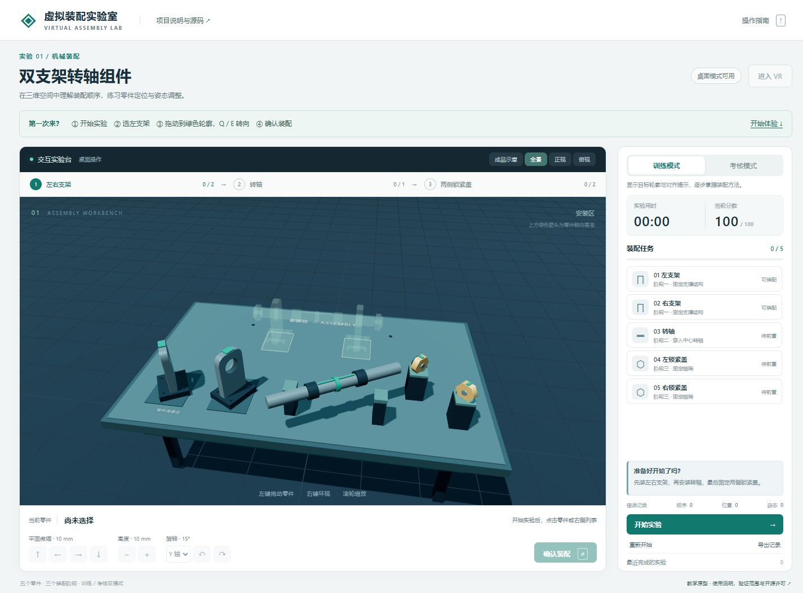

LEARNING THROUGH SMALL ENGINEERING PROJECTS
把工程问题，
做成可以运行的小作品。
我关注安全与系统工程中的建模和可视化。在这里记录一些学习中的尝试：问题如何被定义，程序如何实现，以及结果还有哪些限制。
SELECTED WORK / 作品
01 · 从一个完整的小项目开始关于这个小站
这里从小范围、可复现的作品开始。每个项目尽量留下运行方式、测试证据和当前限制，让想法能被看到，也能被检查。
项目使用AI辅助开发与整理；实际贡献和验证范围写在各自的说明里。新的实验准备好后，再慢慢添加。
Small experiments in engineering modeling and visualization. Each project aims to be runnable, understandable and explicit about its limits. AI assistance and validation boundaries are documented alongside the code.